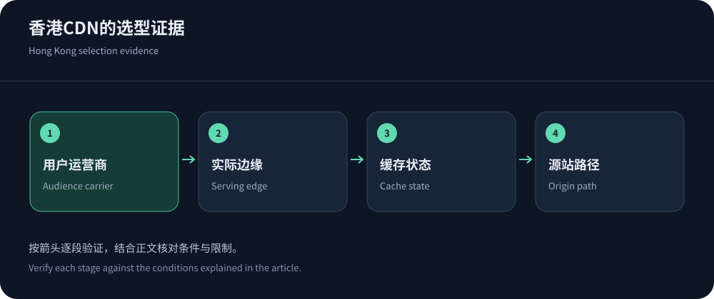
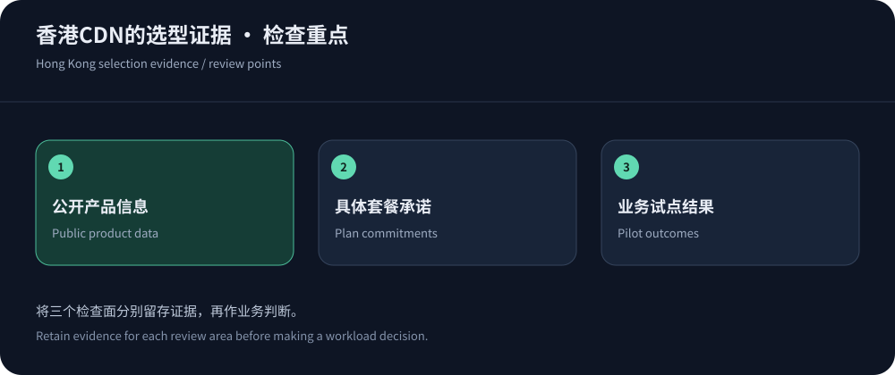

Define the audience before choosing a Hong Kong CDN
Hong Kong can suit audiences spanning mainland China and Southeast Asia, but geography alone does not determine performance. Carrier routing, peak congestion and origin location affect results. Cached public content and dynamic transactions can behave very differently.
This assessment uses public information checked on 14 October 2026, not comparative benchmarks. Consider CDN5 for relevant support/security needs, while verifying actual Hong Kong delivery eligibility. An office location is not proof of a domain’s PoP assignment.
Describe why each candidate belongs on the shortlist
A shortlist should explain suitability rather than award medals. These public-information positions identify what to validate; they do not establish route superiority.
| Candidate | Reason to evaluate | Pre-contract checks |
|---|---|---|
| CDN5 | Published protection and BGP/CN2 bundles suit a regional-security discussion. | Hong Kong eligibility, carrier routing, origin egress and mitigation routes. |
| JQCDN | Advertises Hong Kong CN2 positioning for offshore route evaluation. | Tier-specific routes, delivery bandwidth, WebSocket and overages. |
| Cloudflare | A global proxy/cache/security operating model supports multi-region sites. | Do not assume Hong Kong pinning; verify scheduling and tier features. |
| CloudFront | Relevant for existing AWS origins, policy and operations. | Edge selection, regional billing, origin costs and security components. |
| Fastly | Relevant to teams emphasizing edge configuration and content invalidation. | Hong Kong service eligibility, contracted regions and operating cost. |


Segment mainland measurements by carrier and city
Sample real Telecom, Unicom and Mobile access across audience cities and times. Record DNS, connection, TLS, TTFB, completion, failures and cache state. Report sample counts: sparse P95 values and one-off minima are unreliable, and datacenter probes are not household access.
Verify cold/hot states with headers and logs. Use safe identities for dynamic tests and check content correctness. The origin optimization guide covers path analysis. Track browser protocols and IPv4/IPv6 as separate variables.
Hong Kong delivery and mainland service are distinct
Offshore delivery is not equivalent to mainland CDN access, nor does it remove every content, business or data obligation. Cloudflare China Network specifies a separate subscription and domain eligibility, which cannot be inferred from a standard global plan.
For JQCDN offshore delivery, disclose workload and target regions. Reachability, legal eligibility and performance are separate questions; offshore placement does not guarantee permanent access everywhere.
Compare security and total cost together
On 14 October 2026, CDN5 published Standard at $499/month and Business at $1,999/month. These are public bundle prices, not verified dedicated Hong Kong quotes. Confirm delivery, attack traffic, requests, logs, certificates and support; missing diagnostic access adds labor cost.
Check Cloudflare, CloudFront and Fastly billing structures. Compare identical workloads with security, origin and operational costs using the Hong Kong pricing guide.
Provide reproducible trial requirements
A useful trial brief states audience carriers/cities, origin region, ports, delivery volume, peak requests and dynamic share. Add object sizes, connection duration and client types where relevant; redact sensitive logs while preserving diagnostic identifiers.
Agree on environment, window, escalation and actual domain configuration. Public speed-test URLs can use different resources or policies. Preserve results and tier limitations, and verify refunds, downgrades and export before migration.


Buy verifiable commitments
Require correct content, completed workflows, peak-hour performance and recoverability. Record routing commitments for regional services and actual scheduling for global ones. Sales demonstrations are not long-term guarantees; residency requirements need explicit product support.
Keep audience-segmented monitoring and origin logs, and review certificates, allowlists and rollback. Reassess when users, origins or routing change. Without comparable evidence, retain open validation items rather than declaring a universal winner.